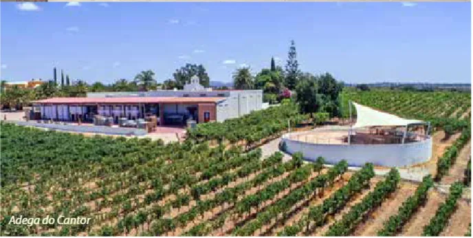

Chapter 4 · The Portuguese wine regions
Algarve Wine Region
Key figures (2022)
Viticultural area: 13,391
Total Product.: 12,000 hl Average product. 1,000 litres/ha
N.º wineries: 34 (2017)
History
Situated close to the Straits of Gibraltar, the Algarve has always been on the itinerary of merchant ships of the Mediterranean. For a long time the Tartessians, Phoenicians, and Carthagians lived on the Algarvian coastal resources only. Some traces of viticulture in provincial Roman times, and later the Visigoth period, exist in Milreu, Faro. Vineyards continued to be a major feature of the Algarve region until the 5th century, when large-scale agrarian units began to flourish. In same century, large-scale agrarian exploitation collapsed with the fall of the Roman Empire. At the time of the Gharb-Al Andaluz, the vine continued to play an important role, not only for the production of fresh and raisined grapes, but also for the production of wine which did not out during the Muslim presence in the region. In AD 711, the Muslim Tariq ibn Ziyad crossed the Straits of Gibraltar and defeated the king of the Visigoths. In 712, Abd al-Aziz ibn Musa conquered “Al-Gharb Al-Andalus”, or the territory “to the
Map of wine tourism route
Açores Portugal continental
Graciosa
Pico
Terceira
Madeira
Porto Santo
Madeira
west of the Al-Andalus”. During the five centuries of their occupation of the Algarve, not only did the Moors plant vineyards, but they also exported wine produced from them. From the Reconquista of the Algarve in 1249 onwards, the Christians took advantage of and improved upon the economic organization left behind by the Moorish people. Until the proclamation of the Republic, Portuguese monarchs assumed the title of “King of Portugal and of the Algarves”. The Algarve became an important point of departure during the Age of Discovery, and was also an important wine export centre. The 1755 earthquake devastated the region and in the period which followed, the importance of viticulture diminished. The viticulture of Algarve suffered, since many tens of thousands of hectares of vineyards never recovered from the Phylloxera
Silves Lagoa Lagos Portimão
disaster. Apart from the establishment of cooperatives by the “Estado Novo” (Salazar dictatorship) which was farreaching in its extent; restructuring and development of viticulture in general did not occur. Today, however, with quality denominations at regional and wine estate level, viticulture in the Algarve is beginning to recover some of its former prestige.
Terroir
Climate: Humid, temperate climate with a dry season in summer. The southernmost region of Portugal is separated from the Alentejo by the mountain ranges of the Serra de Caldeirão and Monchique and therefore has an independent and different climate. This and the amphitheatre-like exposure it receives from the south make the climate in the Algarve a markedly Mediterranean one. The climate is typically
Guadiana river
Tavira
Faro
Mediterranean: low temperature ranges throughout the year and low annual
rainfall. Köppen climate classification: C (temperate), subgroup Csa (hot-summer Mediterranean climate) and Csb (warmsummer Mediterranean climate) in some neighbouring areas; MCC System
indices (Tonietto & Carbonneau, 2004): heliothermic index (HI): +2, cool night index (CI): –1, dryness index (DI): +2. The region is dry and suffers little influence from winds The main climatic problems are the water stress and the sun burn. Average annual sunshine hours: > 3,000 h
Rainfall: 474 mm
Geology: The Comissão de Coordenação e Desenvolvimento Regional do Algarve, I.P. – CCDR (Regional Coordination and Development Commission of the Algarve) distinguishes four different geologically determined wine-growing zones. The Litoral, or coastal zone, where most vineyards are located, is composed of the following soil types: degraded sandstones, conglomerates and biocalcarenites. The Barrocal, or transition zone between the coast plain and the mountains that runs longitudinally east to west across the Algarve, is composed of limestones, dolomites, marls and calcarenites, while the Beira-Serra, sometimes colloquially thought of as part of the Barrocal, has red sandstones and volcanic ash (Silves, Monchique). Finally, the Serra (mountainous region),where shales, graywacke , syenites, and corneal strata in Monchique, are found.
Soils: Predominantly sandy. There are also sandy loam soils near the coast and sandy clay, clay-limestone or schist soils inland and in the western part of the region. (psamitic regossols, red or yellow Mediterranean sandstone and shale, podzols and alluviosols).
Vineyard elevation: 20–100 m
Types of wine produced
Algarve IG wines or Algarve regional
wines: Red, white, rosé, red liqueur, white liqueur. Lagoa DO, Lagos DO, Portimão DO and
Tavira DO wines: Red and White
Regional contacts
Technical information: Comissão Vitivinícola do Algarve (Vitivinicultural Commission of the Algarve) Estrada Nacional 125 Bemparece, 8400-429 LAGOA, Tel. 282 341 393,
Website: www.vinhosdoalgarve.pt Cultural information on the
wine of the region: Confraria dos Enófilos e Gastronómica do Algarve (“Confraternity of Oenophilists and Gastronomists of the Algarve”); Avenida 5 de Outubro, 8004-000 FARO;
Contact: Confraria dos Gastrónomos do Algarve (Confraternity of Gastronomists of the Algarve), Rua Padre Evaristo do Rosário Guerreiro, 11, 8500-715 PORTIMÃO,
Mobile: 960 064 967; Museums, Website: http://algarve. angloinfo.com/af/292/algarvemuseums-and-monuments.html Institutions of higher learning and
viticultural research: Universidade do Algarve, Campus da Penha (University of the Algarve, Penha Campus), 8005-139 FARO; Tel.: (351) 289 800 100; Website: www.ualg.pt; e-mail:sfp@ualg.pt
Certification authority: Comissão Vitivinícola do Algarve (Vitivinicultural Commission of the Algarve), Estrada Nacional 125 – Bemparece (IVV premises); 8400-429 LAGOA, Tel.: 282 341 393, Fax: 282 341 396, e-mail: cva.direccao@vinhosdoalgarve.pt,
Website: www.vinhosdoalgarve.pt
Producer and bottler information:
http://www.ivv.min-agricultura.pt/ np4/1736.html, Yearbook, page 250; and in the Algarve itself: Website: http:// www.visitalgarve.pt/pressroom.file. php?fileID=32&file=guia_vinhos_09.pdf
Enotourism information: Turismo do Algarve, Av. 5 de Outubro, n.º 18, 8000-076 FARO – Portugal, Tel.: 289 800 400, Fax: 289 800 489, e-mail: turismodoalgarve@ turismodoalgarve.pt;
Website: www.turismodoalgarve.pt and www.visitalgarve.pt A detailed brochure on the Wines of
Algarve can be found here: (https://api. visitalgarve.pt/uploads/1/1/Downloads/ Guias/Vinhos%20do%20Algarve_EN.pdf Wine Guide to the Algarve.)
Botany (biodiversity features) and authorised varieties
Legal basis: Ministerial Order n.º 347/2015 of 12 October, Ministerial Order n.º 72/2014 of 17 March and Decree-Law n.º 212/2004 of 23 August.
Red wines: Alfrocheiro (Tinta Bastardinha), Alicante Bouschet, Aragonez (Tinta-Roriz), Baga, Bastardo (Graciosa), Cabernet Sauvignon, Caladoc, Carignan, Castelão, Chambourcin, Cinsaut, Corropio, Grand Noir, Grenache, Manteúdo Preto, Merlot, Monvedro, Moreto, Moscatel Galego Tinto, Negra Mole, Petit Verdot, Pexem, Pinot Noir, Syrah, (Shiraz), Tannat, Tinta Barroca, Tinta Caiada (Pau Ferro, Tinta Lameira), Tinta Carvalha, Tinta Miúda, Tinto Cão, Touriga Franca, Touriga Nacional, Trincadeira (Tinta Amarela), Vinhão (Sousão), Zinfandel, Gewurztraminer and Moscatel Galego Roxo.
White wines: Alicante Branco, Alvarinho, Antão-Vaz, Arinto (Pedernã), Bical (Borrado das Moscas), Chardonnay, Chasselas, Códega do Larinho, Diagalves, Encruzado, Fernão Pires (Maria Gomes), Gouveio, Larião, Malvasia Fina, Malvasia Rei, Manteúdo, Moscatel Graúdo, Mourisco Branco, Perrum, Rabigato, Rabo de Ovelha, Riesling, Sauvignon (Sauvignon Blanc), Semillon, Sercia (Esgana Cão), Síria (Roupeiro), Tália, Tamarez, Terrantez, Trincadeira das Pratas, Verdelho, Viognier and Viosinho.
Prestigious wineries
in the region: Casa Santos Lima - Companhia das Vinhas, S.A. – Quinta do Patarinho
Lda., Tavira. The Quinta do Patarinho is part of the dynamic Casa Santos Lima group which has wine interests in five of Portugal’s wine regions. In 2022, it produced 170,000 kg grapes, but since then there has been vigorous expansion, with the planting of new vineyards. QBL Unipessoal Lda., Quinta do


Barranco Longo, Algoz, Silves Production in 2022: 120,000 kg grapes
Villa Alvor was owned the famous Frederico da Paz Mendes, Visconde da Rocha de Portimão in the 19th century.

The southern part of the original estate was purchased from his descendant João Mendes by the Aveleda Group, of vinho verde fame in 2019. Vinho verde production in 2022: 120,000 kg grapes
Quinta dos Vales Wine Estate. A self-made millionaire visionary after saying goodbye to successful entrepreneurship in a terrible economic environment has fulfilled his dream of creating his own winery in the Algarve, along with fine art and rural housing incorporating a new dimension of quality. Production in 2020: 83,000 kg. Quinta do Canhoto Adega Única – Adega Cooperativa do Algarve, CRL. The Adega Cooperativa do Algarve resulted from the merger of the Lagoa and Lagos cooperative wineries, with the facilities located at the former Adega Cooperativa de Lagoa. The winery was planned for millions of litres at the time of the Novo Estado dictatorship, but over time the winery’s capacity has decreased to around 20,000 bottles a year of red, white and rosé. Adega do Cantor – Quinta do Miradouro Originally, this was singer Sir Cliff Richard’s viticultural project covering 26 hectares of vineyards, and three luxury villas each with their own leisure areas. The estate was sold to a Portuguese company in 2021.
Certified organic: Monte da Casteleja; Jaap Honekamp; Arvad; Morgado do Quintão